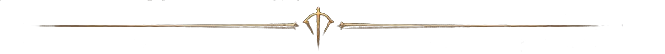

Mikstury

Nowe mikstury i zmiany w istniejących.
| Mikstura | Działanie | Skąd |
|---|---|---|
| Mikstura pełnego leczenia | 100% życia | 3 Super mikstury leczenia w Kostce, Piekło |
| Mikstura pełnej many | 100% many | 3 Super mikstury many w Kostce, Piekło |
| Mikstura wzmocnienia | 50% życia i many (w grze 35%) | jak w grze |
| Mikstura pełnego wzmocnienia | jak w grze | 2 Mikstury wzmocnienia w Kostce |
Na Piekle zamiast Mikstury pełnego wzmocnienia losuje się jedna z trzech pełnych mikstur (po 1/3). Pełne mikstury mają okrągłe butelki we własnym kolorze.
| Nie wypadają | Uwagi |
|---|---|
| Mikstury wytrzymałości | usunięte całkiem, także z Krowiego Poziomu i sklepów |
| Mikstury do rzucania (ogniowe i trujące) | nie wypadają z potworów ani skrzyń |
| Antidotum i odmrażania | nie wypadają, można je kupić |